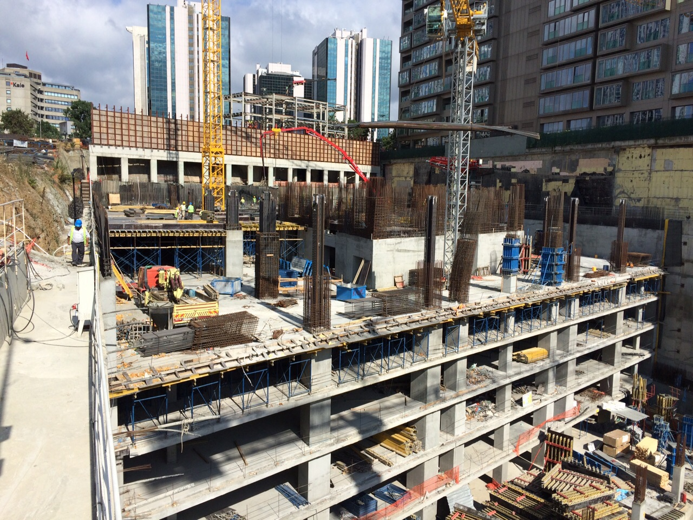

Bina Güçlendirme Nelere Dikkat Etmeliyiz?
Yakın dönemde meydana gelen depremlerle beraber bina güçlendirme konusu da akıllara sıkça gelmektedir.
Kaçak Kat Ve Neden Oldukları
Binaların en başta yapıldığı zaman, belirli bir taşıma kapasitesi vardır ve bu limit kaçak katlarla aşılmaktadır. Yani sağlam bir temele sahip bina bile olsa, kat sayısı kural dışı artırıldığı zaman depremde yıkılma riski de artmaktadır. Bu durum Türkiye’de çok sık görülen bir sorundur. Özellikle deprem için alınan vergilerin gerektiği gibi kullanılıp kullanılmadığı belirsizlik içerdiği için sorunlar daha da artmaktadır. Binaları güçlendirmek için öncelikle yasal olarak devletin sorumlulukları bulunmaktadır. Bu sayede kamuda da yanlış uygulama olasılıkları azaltılacaktır.

Bina Temelini Güçlendiren Uygulamalar
Binaların temelinde kullanılan demirin düz olmaması gerekir. Bu durum baştan zaten binayı inşa eden kişiler ve sorumlular tarafından bilinen bir gerçektir. Doğru malzemeye rağmen yine de güçlendirici işlemlere gerek varsa, temelden destekleri artırmak en doğru uygulama olacaktır. Çünkü bir binanın temeli ne kadar iyi olursa depreme dayanıklılığı da artar. Sütun eklemesi en uygun malzeme ile doğru teknik ölçümler paralelinde gerçekleşmelidir. Eğer duvarlarda çatlamalar varsa, yine uzman kontrolü ile beraber gereken onarımlar teknik açıdan sağlanmalıdır. Onarımla kullanılması mümkün görünen binalar, temelden üst bölümlere doğru çalışmalar sürdürülür.
Bina Duvarlarını Güçlendirmek
Binalardaki oda duvarlarında oluşan çatlamalar, derecesine göre onarılarak çözüme kavuşturulabilir. Uzman yönlendirmesi ile beraber bina duvarı çatlak onarma işlemi için doğru malzemeler temin edilmeli ve bir usta yardımıyla çözüm sağlanmalıdır. Duvar hasarlarını onarmak gelişigüzel yapılmaması gereken bir işlemdir. Öncelikle binadaki hasarın ciddiyeti doğrultusunda hareket edilmesi gerektiği hatırlatılmalıdır.
Kaçak Katlar Yok Edilebilir Mi?
Binada bir hasar yoksa ve kaçak kat varsa bunu yok etmek üzere gereken başvurular yapılabilir. Depreme karşı önlem almanın en etkili yollarından biri yapılan yanlış uygulamanın geri çekilmesi olacaktır. Bina güçlendirmesi için kaçak kat varsa yok edilerek işe başlanabilir. Bunu sağlayacak olan teknik ekip de doğru şekilde güvenlik önlemleri alarak işlem yapmalıdır. Kaçak katların yıkımı esnasında çevreye zarar payı düşünülmeli ve önlemler alınmalıdır.